空之轨迹SC 全人物回路配法囧解
前言
这里主要转载自 ArielSharon 的同名贴子，由于原帖没有初级教学部分，因此又将同作者发布的3rd回路教学贴中有关入门教学的部分提取出来作为开头。
接下来，我们先以FCSC可爱无敌的正太男主角约修亚为例来说说导力器的构成
在下图的导力器界面上，我们可以看到右边小约的回路图上有2条线，一条是金色的，一条是蓝色的，这两条线分别代表不同的回路链，金色的回路链上一共有5个回路孔，蓝色的回路链上一共有3个回路孔，由于金色链比较长，它又被称为长链，蓝色链则被称为短链，这个导力器被称为5-3链导力器
回路各有自己的属性，下图中行动力属性是时8，攻击3的属性是火5，驱动2的属性是时3，省EP3的属性是时3空5幻3
同一回路链上各回路属性值可叠加，不同回路链上不可叠加。金色链上我装了行动力4，攻击3，驱动2，金色链的各系总属性值就是时11火5，按照魔法所需要的属性值，这条链子上可以出的魔法就是时间加速改、炎之箭等魔法，蓝色链上有行动力4、省EP3，总属性值就是时11空5幻3，可以出次元上升等魔法，金色链与蓝色链上合出的几种魔法加起来就是这个导力器合出来的所有魔法
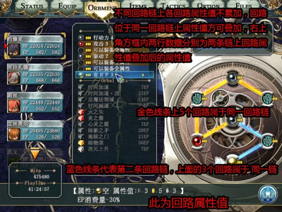
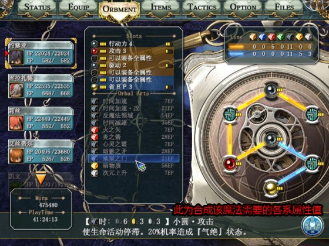
新手配回路有几个误区：第一个误区是：追求全屏魔法，忽视魔法的实用性，甚至为了合魔法不装基本回路。实际上高级全屏魔法不仅难配，而且大多数伤害附加低、驱动时间和冷却时间（硬直时间）一般也比较长，最典型的例子就是冰狱冥嚎，驱动时间是一般魔法的2倍左右，伤害却连冰蓝冲击（冰狱伤害附加150，冰蓝250）都不如，是十足的鸡肋魔法 （水水注：这部分转自A萝莉3rd回路配法部分，与SC略有区别，在SC中冰狱冥嚎是伤害相当高的大魔法之一，比冰蓝冲击等单体水魔法高得多）
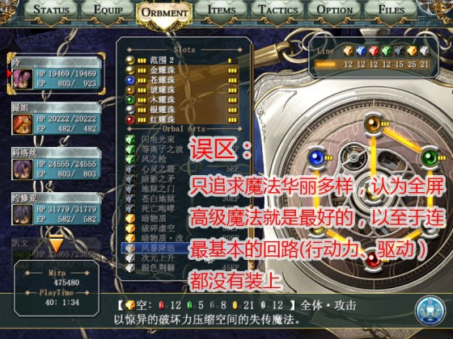
新手配回路还有第二个误区：菜刀法师的回路不分，于是出现了菜刀不装攻击装防御或者攻击防御都装的情况，法师则装魔防，实在是看了就让人汗颜啊
菜刀必备的回路：攻击、行动力菜刀推荐的回路：HP、妨害、命中、移动、XX之刃/理(推荐石化/死/必杀），各种功能回路比如阳炎天眼等都可以往菜刀身上装菜刀不能装的回路：防御（装了-STR）
法师必备的回路：精神（辅助法师不是必备）、省EP、行动力、驱动法师推荐的回路：同等条件下属性值多的回路，例如木耀珠就好于风耀珠，银耀珠就好于幻耀珠法师不能装的回路：魔防（-ATS）
PS：回路是有等级的，普通回路1-3为一级回路，4为二级回路，耀珠为三级回路，功能回路则等级不一，如果回路装不上请先升级回路孔，XX之刃/理只能同时装一个
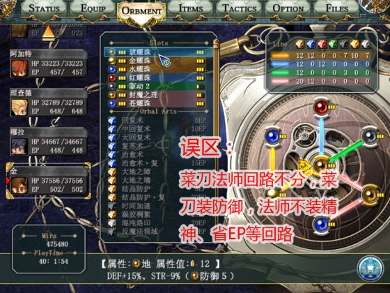
SC 由于菜刀流战技的升级越到后期菜刀的优势越明显，不过总体还是魔法菜刀平衡的一作 。
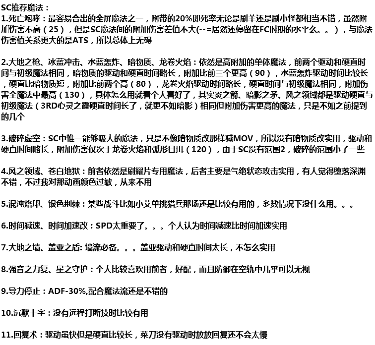
接下来是回路囧解：
约修亚：SC时期导力器大幅降级，5-3链加上5级普通回路的设定使驱动2属性值显得尤为鸡肋，实际小约的链只等于4-3链，加上中心时限定导致中心孔属性值少，短链合不出什么魔法，链子还不如小艾的，由于SC女魔装的逆天男法很悲剧，BOSS战不建议小约走法师路线，小约SC战技普遍高附加低硬直，所以走菜刀路线很不错
小约第四章在空贼基地可以捡到攻击3，用攻击3可以合出强音，就用默认那个出死咆的也可以，只要别把时改时减弄没了就行
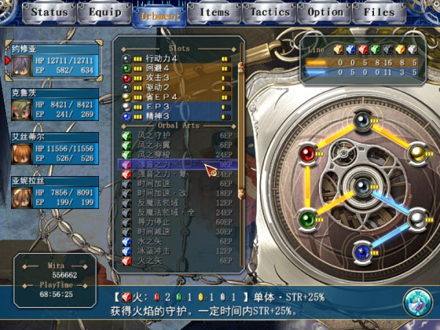
小约正式入队后建议走菜刀路线，也可以给自己合个强音复
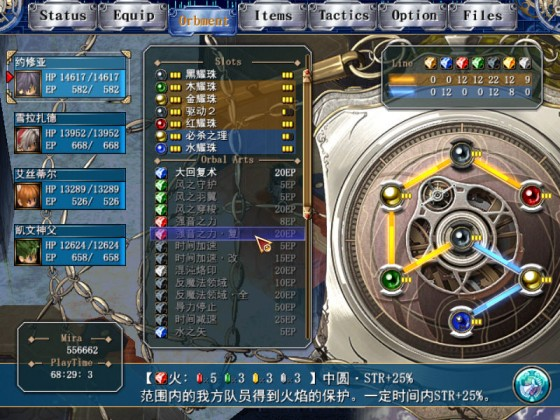
有治愈术复、死咆和必杀的双修配法，小约打小怪可以放放死咆，BOSS战死咆可以攒攒CP
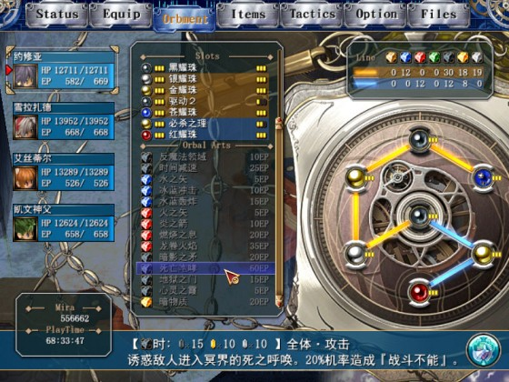
艾斯蒂尔：4-4链无属性限制真是潜力无限啊，用她的回路配星守真是种乐趣，小艾SC战技一般，S技附加伤害虽高但是单体，而且不如几位菜刀达人，魔法平平，在有女ATS装支持的时候还可以，建议还是和FC一样走半辅助偏菜刀/法师路线，具体偏菜刀或法师按队中人员定
小艾序章的时候用天眼可以合出暗物质，在前期是强力魔法，这里把攻击1换成HP1可以出回复复，但是范围太小没什么用，不推荐
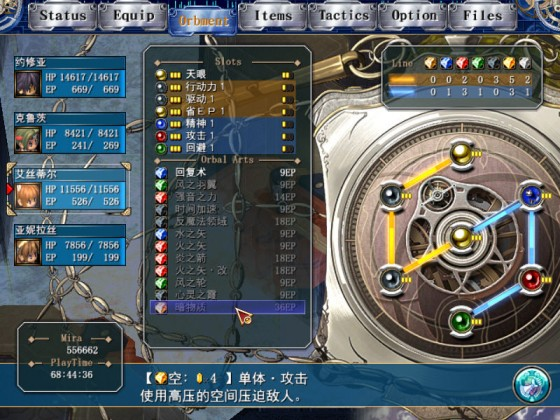
方舟单挑猎兵战小艾用银色荆棘或者死亡咆哮打可以轻松过，这里放弃命中4只合出死咆也可以
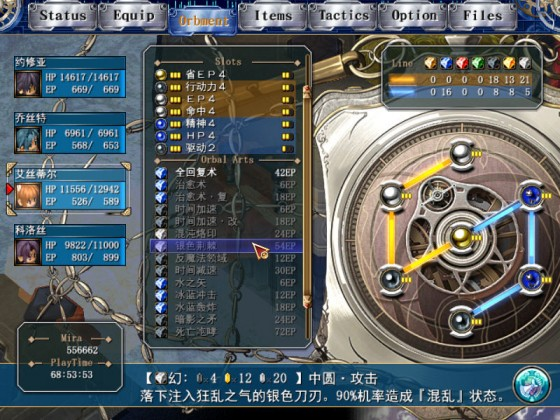
这个配法有墙有破碎虚空有沉默十字有治愈术复，是辅助偏菜刀的配法
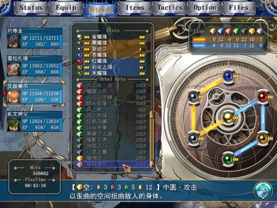
同时有全回复复和死亡咆哮的配法，把银耀换成红可以兼顾攻击，换成石化/封魔/毒之理或者琥耀珠可以放墙
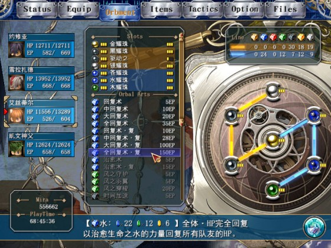
小艾的星守配法，没什么用，配着玩的
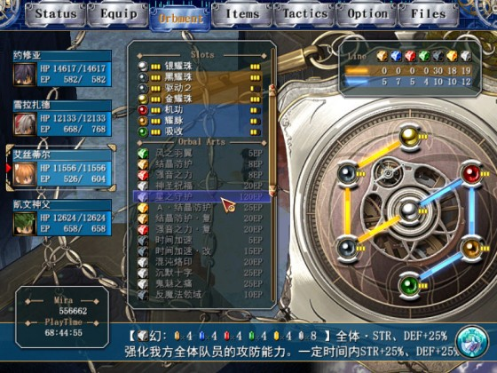
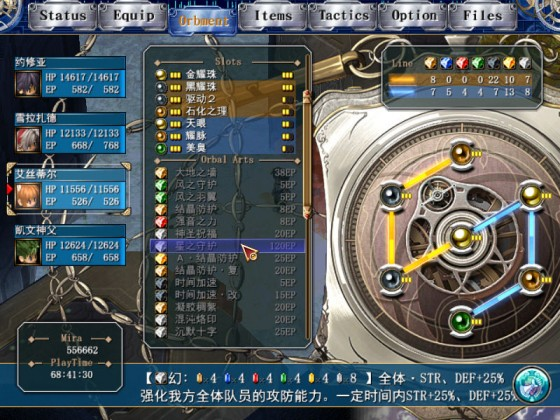
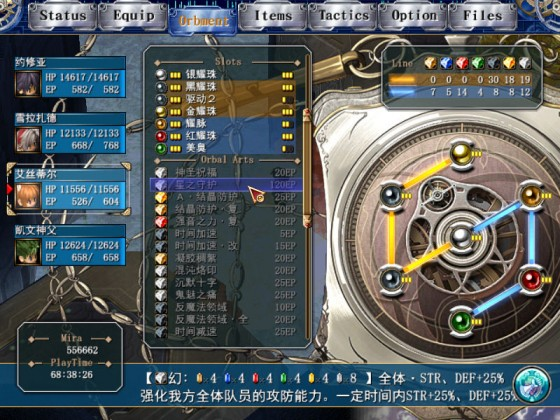

雪拉扎德：SC导力器升级，6-2链，双风限定依然尴尬，不过有美臭这个万金油回路弥补，雪拉SC依然走小怪魔法流BOSS战天堂之吻无限提人的路线
想要无限提人雪拉当然是以保命为最先，不过普通难度不用考虑保命问题。。。就按菜刀的配也行，如果顺便想放个S技要把琥换成红，由于提人时雪拉的SPD需要在四人中最低，可以用行动力回路或者SPD装备调整SPD
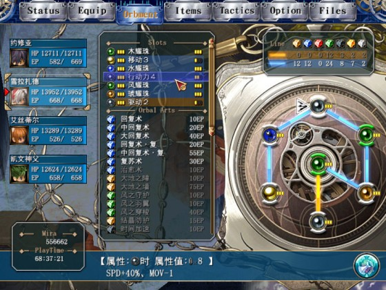
死咆+银色荆棘。。。其实打小怪有死咆和苍白地狱就够了
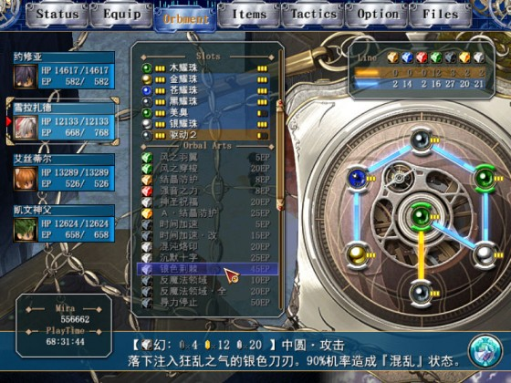
科洛丝：由于逆天的女魔装和强力的战技，公主稳坐SC第一法师的位置，无论是魔攻还是辅助都相当不错，遗憾的就是回路限制太多
公主前期想出死咆必须舍弃回复复，回复复可以改由小艾合（--=小艾在我这是万年奶妈，公主专心魔攻）
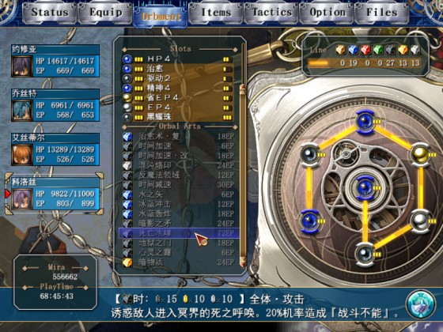
后期有死咆和全回复复的配法，公主的标准回路
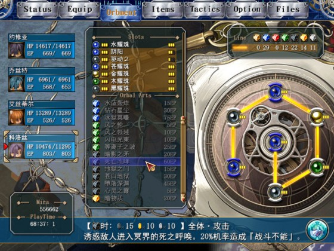
博士提出来的双阴阳配法，可出泰坦咆哮和龙卷火焰（双阴阳回路需要继承FC完美档才能拿到,前一种配法感觉只有打雾魔时有用，后一种比较适用于3RD）
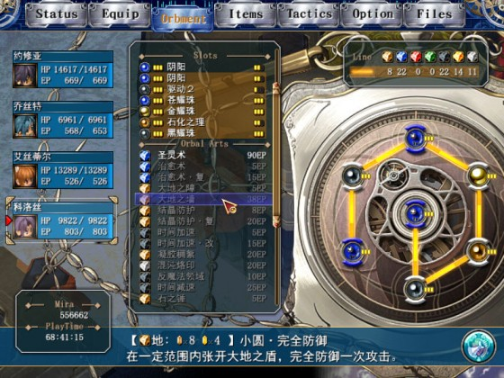
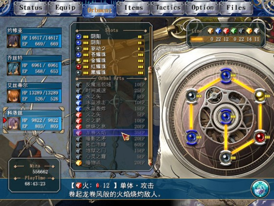
奥利维尔：FC和公主并列的第一法师到了SC由于女魔装之故和战技之故悲剧了。。。魔攻不如公主，辅助不如凯文，导力器还不错，加上毕竟裸ATS全员最高，有爱就带他吧
王子第四章死亡咆哮配法，前提是继承FC完美存档在二章末拿到阴阳回路
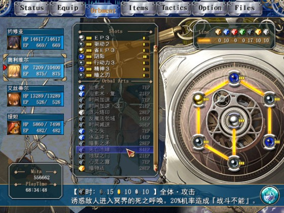
第四章没有阴阳死咆真难配。。。这配法除了刷羊也没其他地方能用了
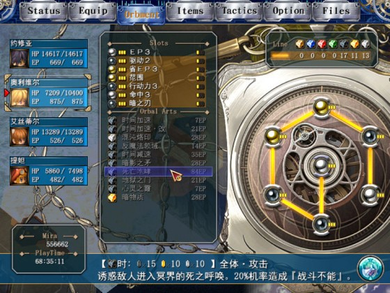
第四章雾魔需要用地系魔法打，合出大地之枪就可以，有条件可以再合泰坦
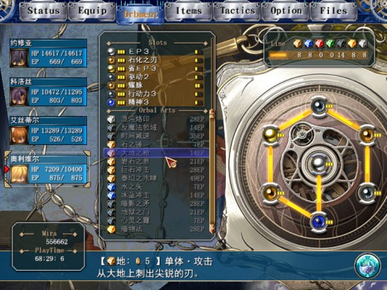
个人比较喜欢的王子配法，有强音、荆棘、死咆，没有回复配法的原因是小艾承包了回复工作。。。
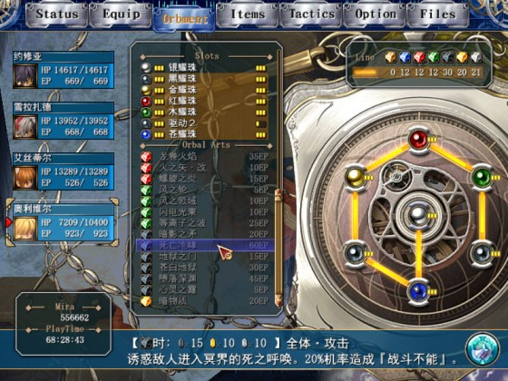
神父：6-2链，中心孔时限定，由于驱动2的存在以及行动力人人必装，导力器实用度与一链无限制无异，在SC可称最完美的导力器，SC神父的双墙和补CP技很不错，是强力辅助
全回复复+死咆，附带一个强音，这里可以把叶隐换成银耀，用叶隐是为了出强音
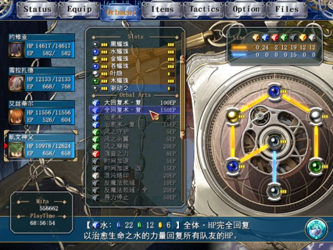
和王子一样的配法，强音复+死咆+银色荆棘
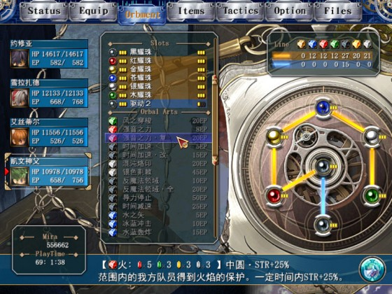
SC最容易出星守的人。。。这种配法没有死咆╮(╯_╰)╭
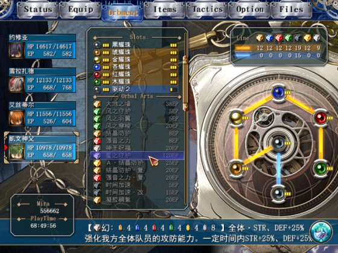
提妲：菜刀一只，依然是战技实用+血少，回路按菜刀配
小提妲还是可以很早合出时间减速的
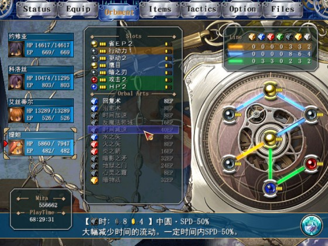
菜刀的回路就是随便塞。。。
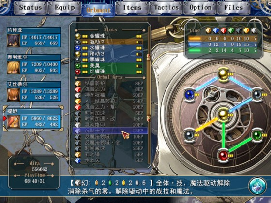
阿加特：SC公牛之怒升级CP补150可以无限爆S，非常好用，加上80级后有了全屏S炎龙蹈海，SC还是很辉煌的
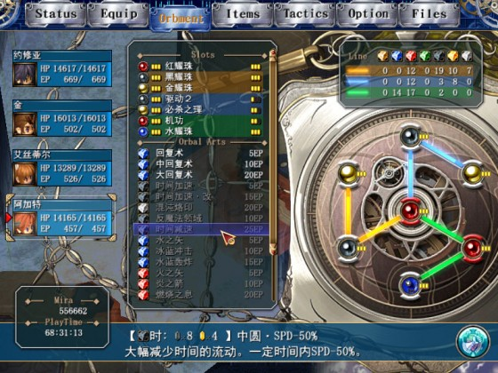
金：龙神功STR/DEF+60%，加上养命功强力回复+解状态，SC金叔也是很辉煌的
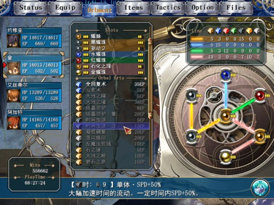
乔斯特：失误了我居然把她放在了菜刀组。。。果然是没有存在感啊，这位是职业墙女一只，战技还算实用，各项数值太糟糕，上不了台面
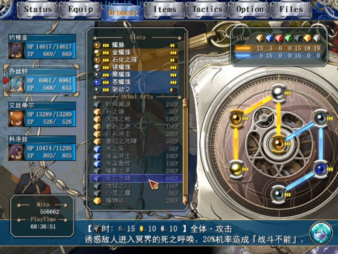
亚尼拉丝：序章和八章支线中入队，纯菜刀一只，序章就按菜刀回路随便塞，八章还是按菜刀回路随便塞。。。
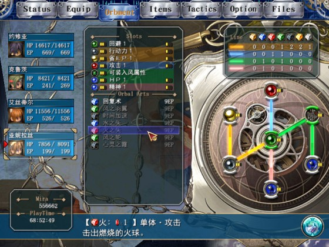

克鲁茨：PSP版SC噩梦序章虐人虐的厉害。。。不过打他有特殊站位可以减少被攻击的次数，第八章学院支线短期入队，回路一般，战技偏辅助，他链子的方向怎么看怎么奇怪。。。
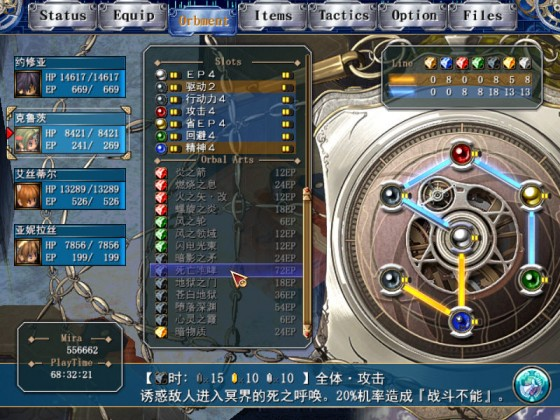